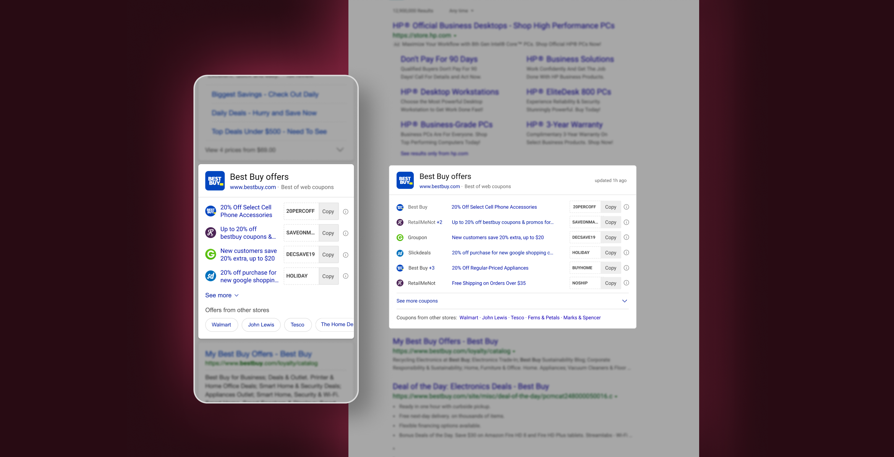
Bing Shopping launched the Offers segment in early 2018 to help users get the best coupons and deals from their favorite brands.
The goal was to help users save their time by giving them instant results on SERP (search engine results page) without having them to browse different websites for appropriate coupons. I took upon the responsibilities of the Offers segment in 2019 and this was the first project I worked on.
I worked as the sole-designer on this project with 1 PM, 1 front-end developer & 2 backend developers in 2019. This case study showcases the work of around 2 months.
My task was to identify the short-comings with the then existing answer (features on Bing search results page are called answers) and redesign it to get better engagement from the users.
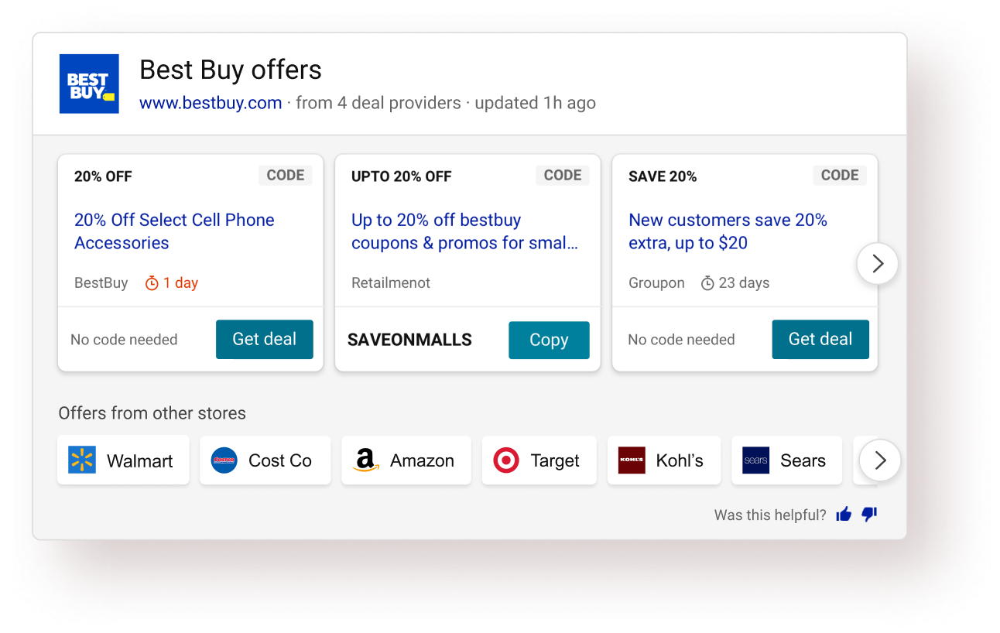
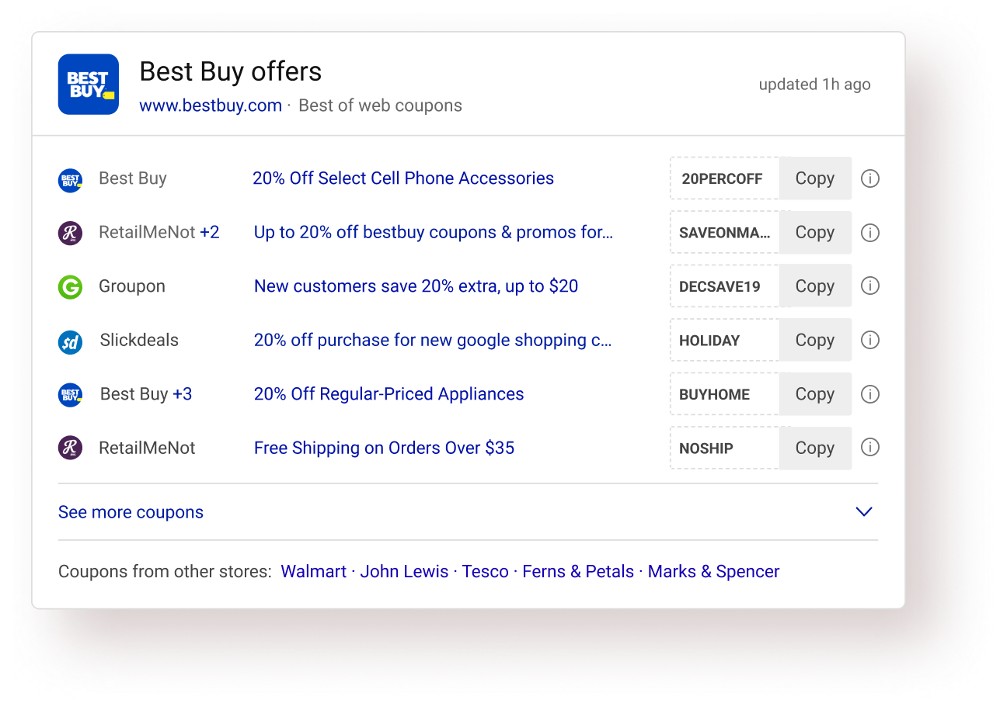
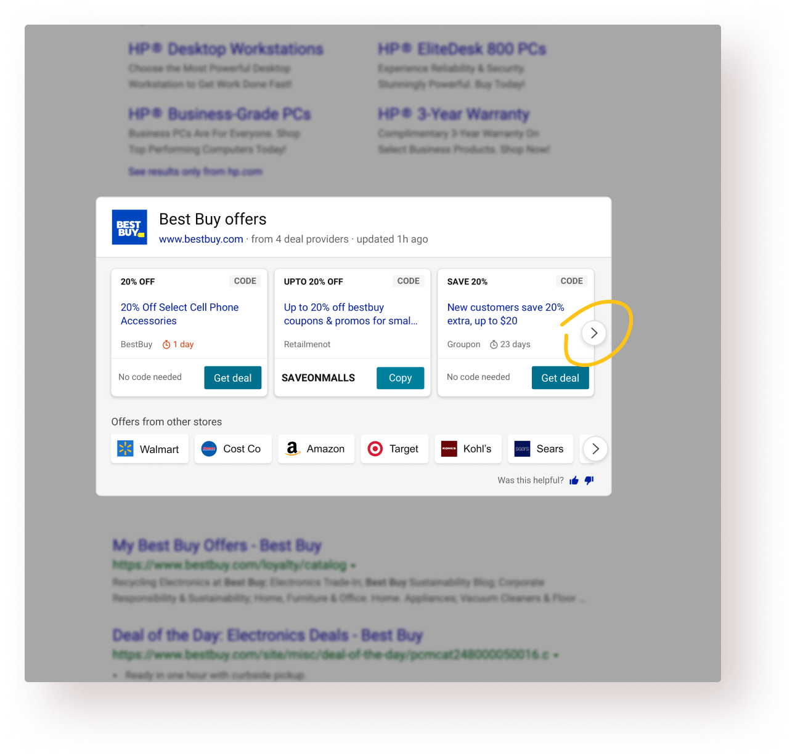
I analyzed the existing experience at that time and did a thorough analysis of that answer based on factors such as scan pattern, information heirarchy, affordance, etc.
I also talked to the PM & design leadership to understand their hypotheses and why they had certain opinions.
Then I turned to the usage data and looked at how our users were interacting with the answer. Talked to a few users as well. Found some interesting insights there.
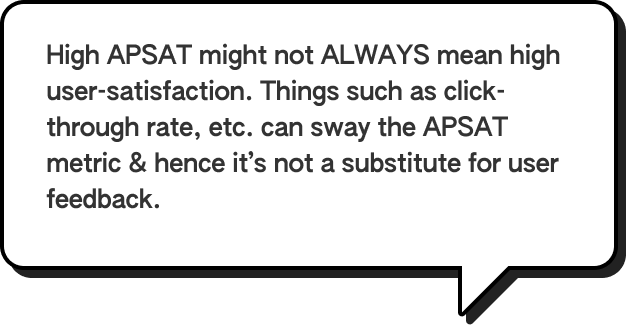
APSAT is an internal Bing metric, which in simpler terms, was used to calculate the user satisfaction for a particular Bing experience.
"Communicate the value of this answer better to the users."
Users want to see the details of the offer before applying/using it.
68% of the total clicks came from the carousel arrow buttons.
Readability, white-space usage & information design could be improved while looking at SERP whole page.
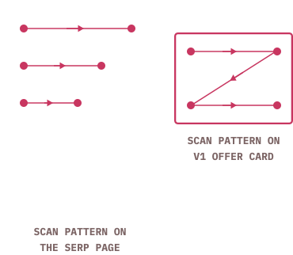
Bing search-engine result page (SERP) and other similar text-heavy web-pages (unbounded containers) have a typical F-shape scan pattern. On the other hands, UI cards (bounded containers) typically have a Z-shape scanning pattern. That’s the general paradigm but there could be exceptions.
Information consumption is quicker and easier during linear scanning versus in zig-zag scanning. Hence, I wanted to explore an answer layout that sits coherently within SERP’s layout.
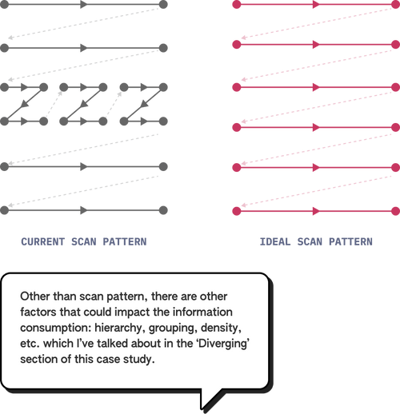
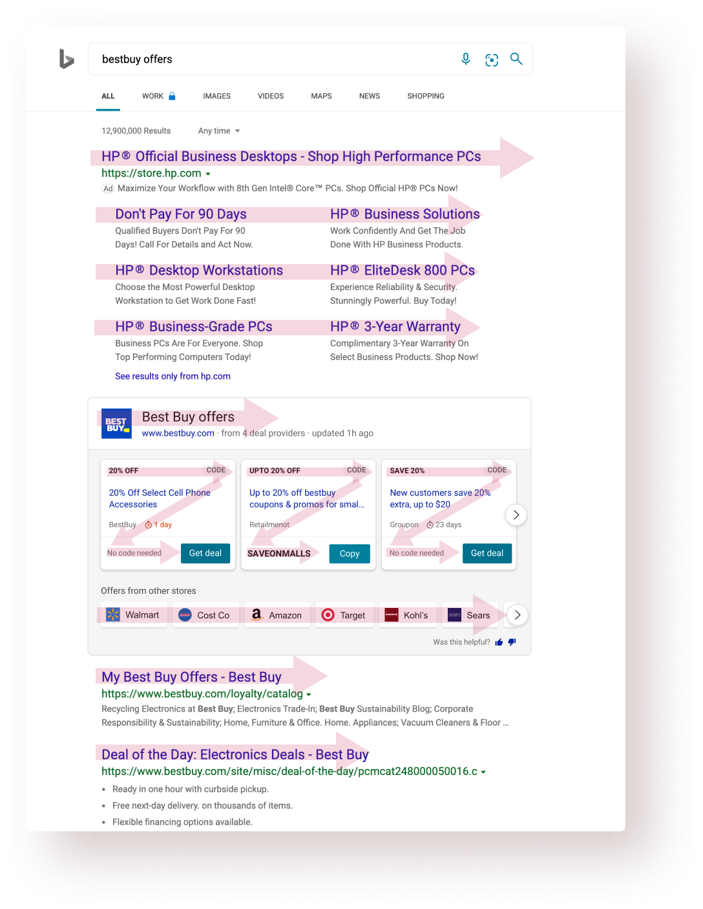
Different users seek out different things when the target audience is broad enough. Getting to know that users are achieving their own goals (could be comparing offers, copying faster, getting right info, etc.) successfully with this answer is the primary success criteria.
APSAT is the measure of user satisfaction and is largely defined by the % of users who interact with the top answer after coming to a search results page. People interacting with the links below the answer without interacting with it contribute to negative APSAT. A 50%+ APSAT is generally considered fit for shipping.
Obviously, the coupon code success rate is paramount but there are other micro tasks like finding the relevant coupon, consuming required info, etc. which aid to an overall high success rate.
When dealing with a lot of data, a reduced task completion becomes an important success criteria because it shows the overall product usability and comprehensiveness.
Different users seek out different things when the target audience is broad enough. Getting to know that users are achieving their own goals (could be comparing offers, copying faster, getting right info, etc.) successfully with this answer is the primary success criteria.
APSAT is the measure of user satisfaction and is largely defined by the % of users who interact with the top answer after coming to a search results page. People interacting with the links below the answer without interacting with it contribute to negative APSAT. A 50%+ APSAT is generally considered fit for shipping.
From stakeholders: the value proposition should be communicated.
From the business ask: Bring in more engagement.Success criteria: Get higher APSAT and success rate.
Showing more offers in one view would lead to more engagements and would communicate the value proposition of the answer.
User interviews: Users were going to the provider website to read the details and came back after knowing the offers was not applicable for them. Success criteria: Reduce task completion time.
Including coupon details in the answer itself would save time by providing all the necessary info at one place.
Design analysis: A quick design analysis of the existing answer showed a good scope in the improvement of information design of the answer. Success criteria: Reduce task completion time.
Using a better and more natural answer layout than the current answer would result in easy information consumption and hence would save time.
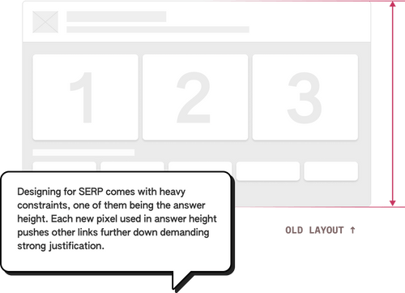
I started the ideation process with exploring options to increase the no. of offers because the other 2 design directions needed some form of fidelity in the designs.
Based on the offer data available and the Bing search results page framework, I created some wireframe layouts to show more than 3 (in the old design) offers. Wireframe for the old design is shown on the left.
I wire-framed/ sketched various card designs for each layout and shortlisted one card. Factors considered while deciding the card:
• Scan pattern of the individual card
• Information hierarchy & grouping
Also, I tested each card for the edge cases and stress-tested all the individual cards before shortlisting the final one.
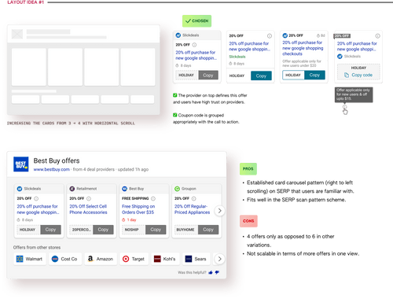
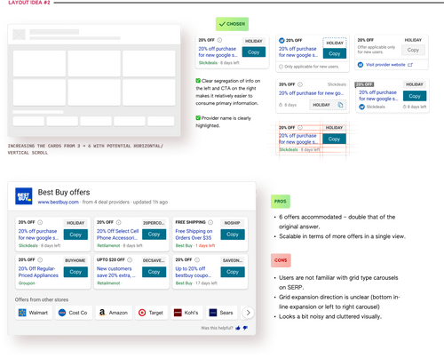
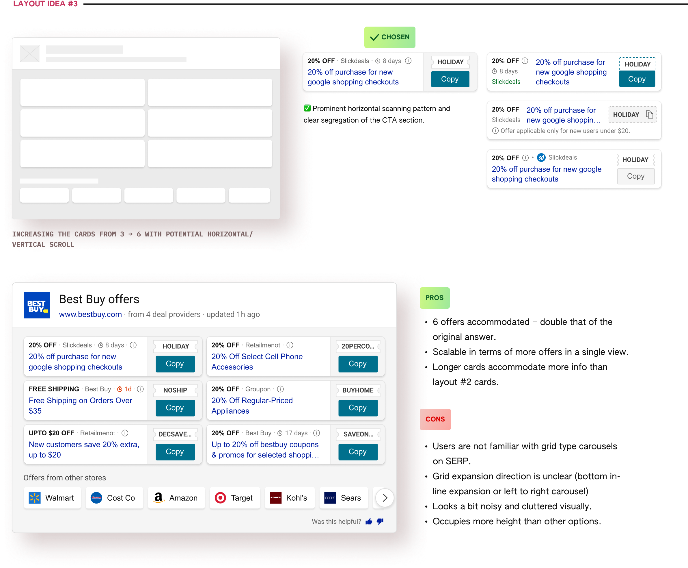
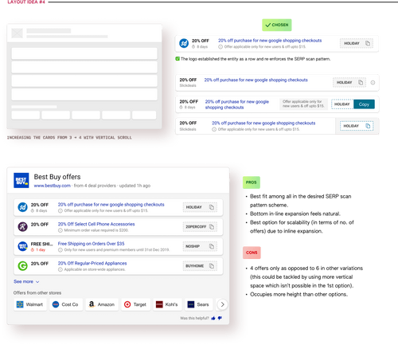
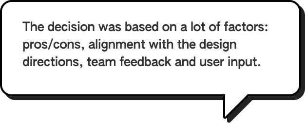
After some discussions & reviews of all the explored visual design options, I narrowed down to 2 final options (Layout #1 & Layout #4), eventually leading to the selction of Layout #4 as the final direction.
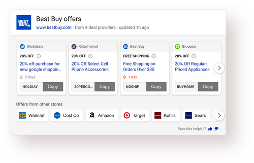
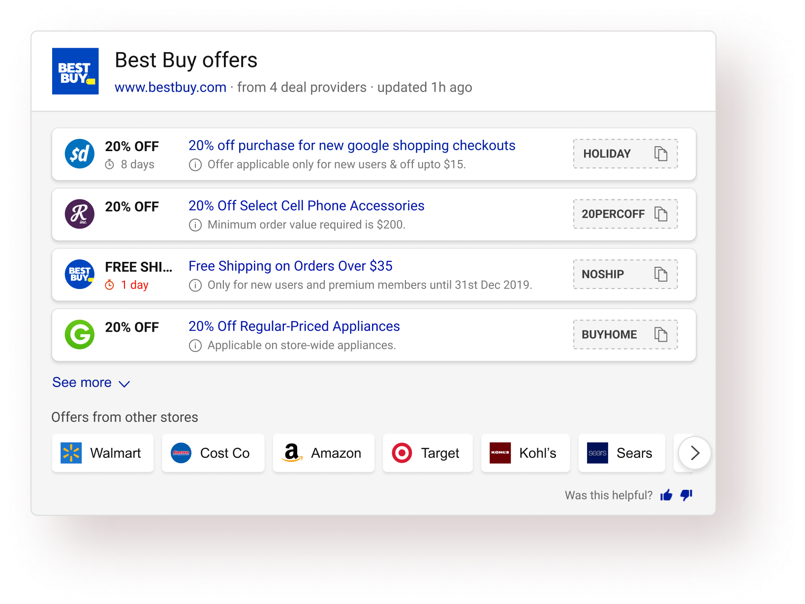
Once the layout direction was finalized, that’s when the iteration on the design started. At this stage, I was giving a lot of attention to detail to bullet-proof the answer and optimizing the hell out of it. 🌚
Each design during this stage did not go through an extensive feedback cycle and the decisions were based mostly on informal team-feedback and my own design intuition.
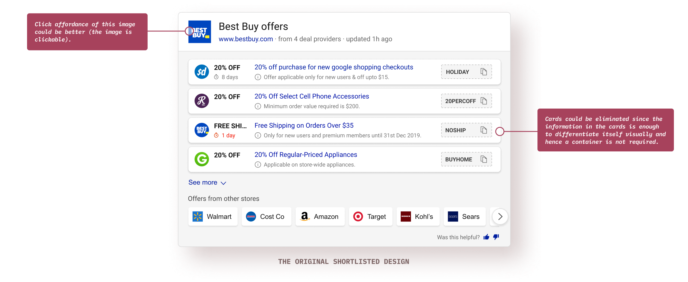
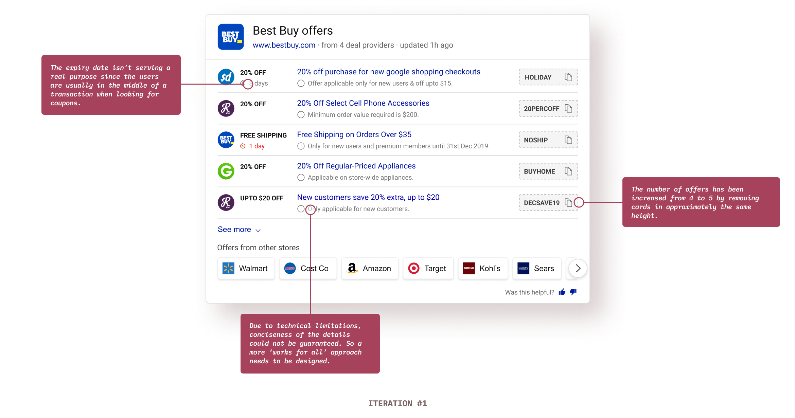
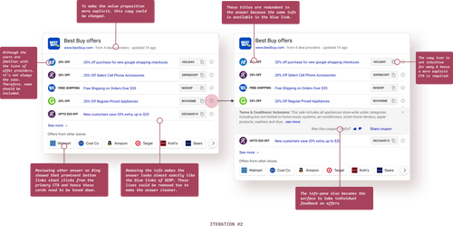
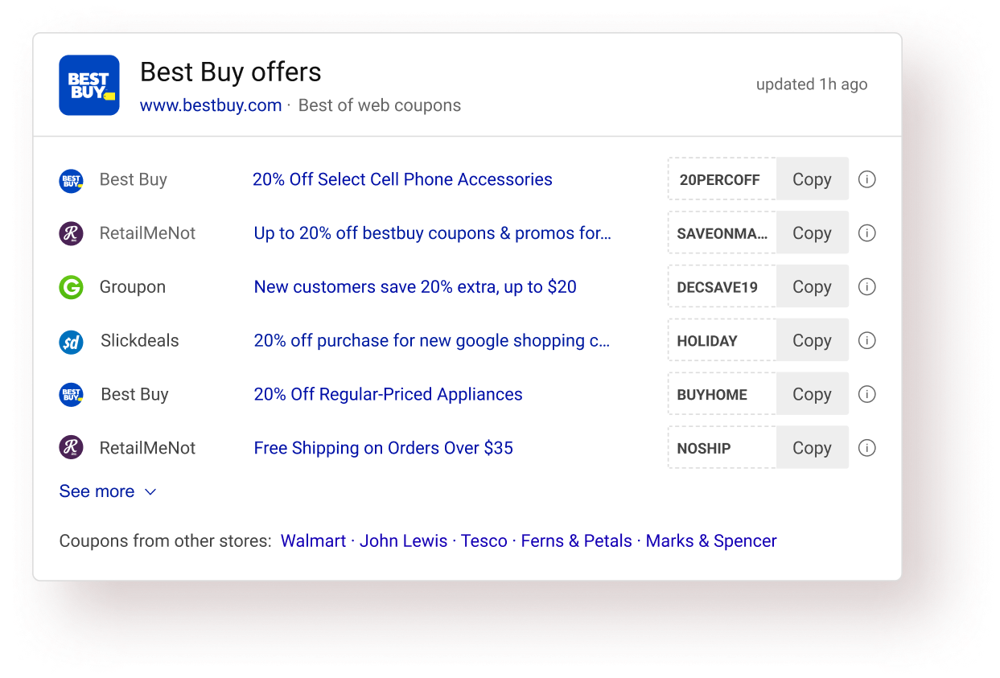
users (46/50) preferred the new experience over the old one in basic A/B testing
(focused on ease of use, usability, info. consumption, etc).
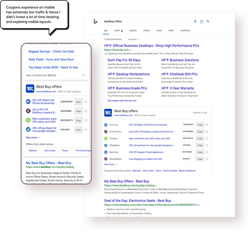
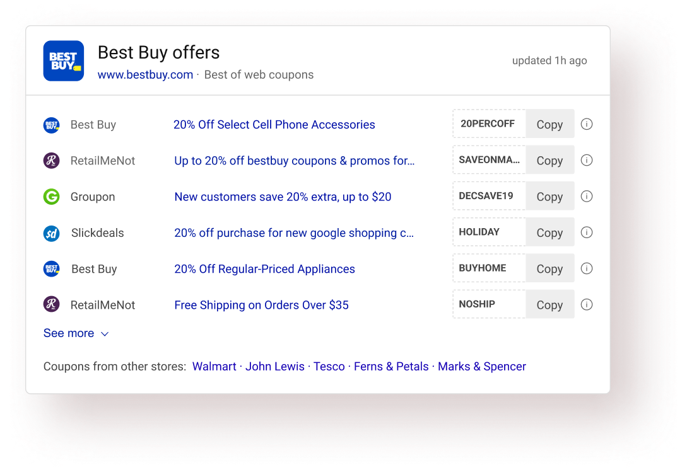
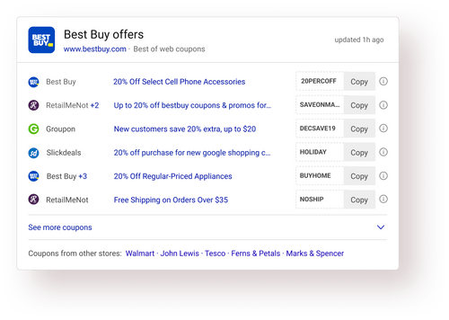
Micro-interactions & animations on SERP is tricky. The PLT metric (Page Load time - one of the primary Bing performance metrics) greatly narrows down the options one could explore. I have always looked at motion on SERP more as a problem solving tool rather than a delight creator. (Although solving problems could bring in the desired delight).
This interstitial message state (Copied to clipboard) serves 3 important purposes:
✅ Preventing unwanted continuous copy clicks while the code is being copied (due to the overlay).
✅ Showing the action confirmation in the same proximity providing good association between action & confirmation.
✅ Less implementation time.
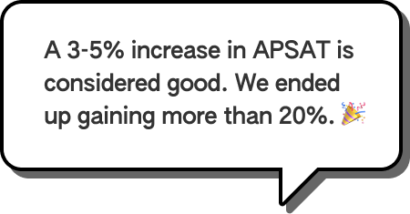
The new answer exceeded the team’s expectations by a huge margin. We were aiming for an APSAT of around 50% (previous answer’s APSAT was around 46% - 47%).
approximate APSAT was observed consistently.
drop in Offers page abandonment.
I had to let go many elements from the answer which was frowned upon by the product team. It’s easy to lose sight of what’s the core value of this answer when dealing with so much data. It was hard to convince the stakeholders to eliminate some of the intelligence built by the team.
I immediately turned to users and focused on what’s the key task. User feedback helped me convince the product team to further explore this direction.
The hard part of information design is to make it work for every case. Edge cases must be clearly defined. Some data points could really be absurd. The blue link length in an offer was one such data point. It was impractical to design for huge string length.
In this case, I turned to Bing usage data and got the numbers extracted regarding string length. A quick analysis revealed that using around 46 with characters would cover around 78% of all offers. I went ahead that and decided to truncate strings greater than that length. Had I delved into designing accurately for all lengths, we wouldn’t have gotten such great results.
Looking back, I realize I could've involved users more in the process (like for example: I could’ve tested all the different card explorations with the users for detailed feedback). I relied on both expert reviews and user reviews, but I wanted to have more user feedback.
I did not conceptualize this answer. I improved upon it. In hindsight, I could’ve interacted more deeply with the initial designer of this answer that probably would have resulted in great insights eventually end up saving the team’s time.
Scan-pattern was one of the key aspect of this overall design project. Verbal feedback isn’t very useful in such cases. I could’ve utilized eye tracking teams’ help to have an eye tracking study for my answer and explorations.
I couldn’t concretely validate the reduce in task completion time assumption in this project. Although I could strongly say that it happens with the new design, I could've done a study to calculate the same in quantitative terms.
All the answers on Bing SERP have gone through a stringent design/development process. I could’ve gathered more insights to inform my designs and learn from what works or doesn’t work for those answers.